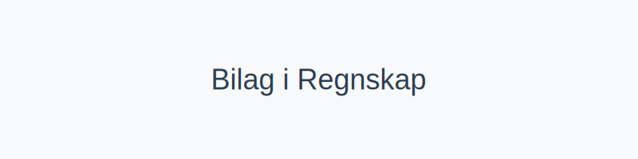
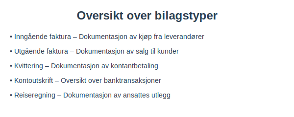
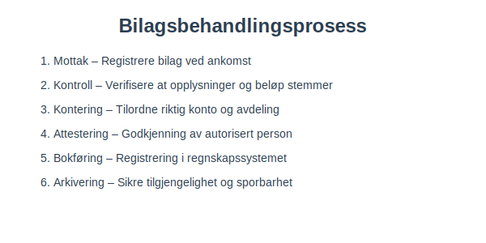
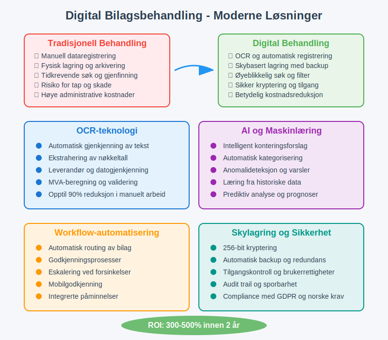
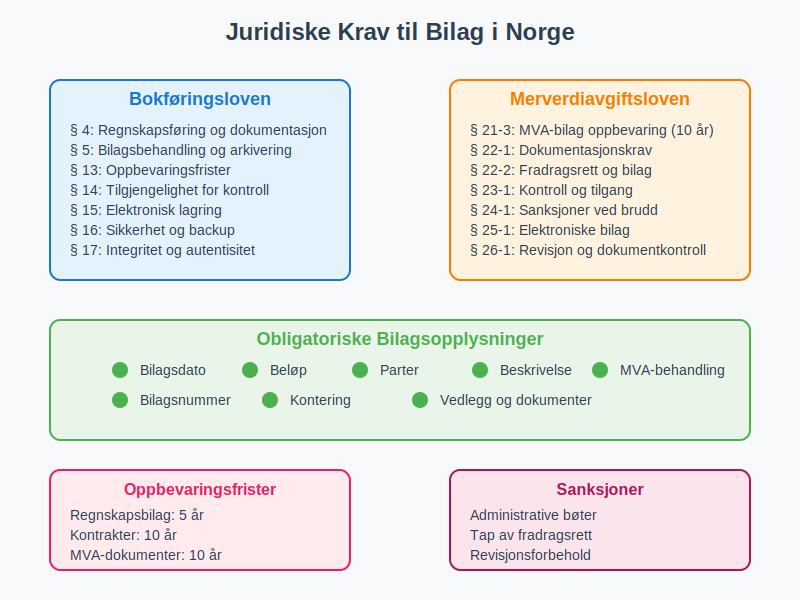
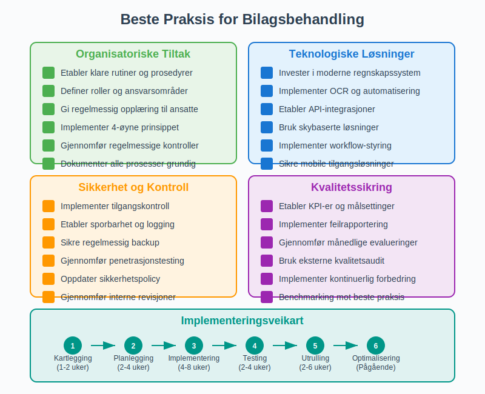

Bilag er grunnlaget for all regnskapsføring og dokumenterer hver forretningshendelse med nødvendig informasjon for korrekt bokføring. Som fundamentet for pålitelig regnskapsføring, sikrer bilag sporbarhet, etterprøvbarhet og overholdelse av norske lovkrav. Denne omfattende artikkelen gir en grundig gjennomgang av hva bilag er, hvordan de håndteres i norsk regnskapspraksis, og hvordan moderne bedrifter kan effektivisere bilagsbehandlingen.

Hva er bilag i norsk regnskap?
Et bilag er ethvert dokument som dokumenterer en forretningshendelse og gir grunnlag for bokføring i regnskapet. I henhold til bokføringsloven og bokføringsforskriften må alle regnskapspostringer være dokumentert med bilag.
Hovedkategorier av bilag
Bilag kan kategoriseres basert på deres opprinnelse og funksjon:
- Inngående bilag – dokumenter mottatt fra eksterne parter, som leverandørfakturaer og kvitteringer
- Utgående bilag – dokumenter sendt til eksterne parter, som salgsfakturaer og kreditnotaer
- Interne bilag – dokumenter opprettet internt, som reiseregninger og avskrivningsbilag
Juridisk grunnlag for bilag
Norsk regnskapslovgivning stiller strenge krav til bilagsbehandling:
- Dokumentasjonsplikt: Alle transaksjoner må dokumenteres med bilag
- Oppbevaringsplikt: Bilag må oppbevares i minimum 5 år etter regnskapsårets slutt
- Tilgjengelighetsplikt: Bilag må være tilgjengelige for revisor og skattemyndighetene
For en dypere definisjon og detaljert gjennomgang, se Hva er Bilag?.
Detaljert oversikt over bilagstyper
Norske bedrifter håndterer en rekke ulike bilagstyper, hver med spesifikke krav til innhold og oppbevaring:
Eksterne bilag
Eksterne bilag utveksles med parter utenfor bedriften og utgjør størstedelen av regnskapsbilag:
| Bilagstype | Beskrivelse | Oppbevaringstid | Lovgrunnlag |
|---|---|---|---|
| Inngående faktura | Kjøp fra leverandører | Minst 5 år | Bokføringsforskriften § 13-2 |
| Utgående faktura | Salg til kunder | Minst 5 år | Bokføringsforskriften § 13-2 |
| Kvittering | Bevis for kontantbetaling | Minst 5 år | Bokføringsforskriften § 13-2 |
| Kontoutskrift | Banktransaksjoner og saldoer | Minst 5 år | Bokføringsforskriften § 13-2 |
| Tolldeklarasjon | Import/eksport dokumentasjon | Minst 5 år | Tolloven § 12-1 |
| Forsikringspolise | Avtaler om forsikringsdekning | Minst 10 år | Bokføringsforskriften § 13-3 |
Interne bilag
Interne bilag opprettes av bedriften selv for å dokumentere interne hendelser:
| Bilagstype | Beskrivelse | Oppbevaringstid | Lovgrunnlag |
|---|---|---|---|
| Reiseregning | Dokumentasjon av ansattes utlegg | Minst 5 år | Bokføringsforskriften § 13-2 |
| Lønnsbilag | Lønnsutbetalinger og arbeidsgiveravgift | Minst 5 år | Bokføringsforskriften § 13-2 |
| Avskrivningsbilag | Dokumentasjon av avskrivninger | Minst 5 år | Bokføringsforskriften § 13-2 |
| Periodiseringsbilag | Fordeling av kostnader over perioder | Minst 5 år | Bokføringsforskriften § 13-2 |
| Korrigeringsbilag | Rettelser av tidligere posteringer | Minst 5 år | Bokføringsforskriften § 13-2 |
| Varetellingsliste | Dokumentasjon av lageropptelling | Minst 5 år | Bokføringsforskriften § 13-2 |

Spesielle bilagstyper for ulike bransjer
Enkelte bransjer har spesifikke bilagskrav:
- Detaljhandel: X-rapporter, Z-rapporter, kasseoppgjør
- Landbruk: Produksjonsnotater, landbrukskontoplan-spesifikke bilag
- Transport: Kjørebøker, fraktbrev
- Bygg og anlegg: Timeregninger, materialnotater, entrepriseavtaler
Bilagsbehandlingsprosess og internkontroll
En systematisk bilagsbehandlingsprosess er essensielt for god internkontroll og overholdelse av norske lovkrav. Prosessen sikrer korrekt registrering, kontroll og lagring av alle forretningsdokumenter.

Detaljert bilagsbehandlingsprosess
-
Mottak og registrering
- Registrere bilag ved ankomst med dato og referanse
- Tildele unikt bilagsnummer for sporbarhet
- Digitalisere fysiske bilag for sikker lagring
-
Saklig kontroll
- Verifisere at varen/tjenesten er mottatt som avtalt
- Kontrollere at leveransen stemmer med bestilling
- Sjekke kvalitet og kvantitet av leveransen
-
Regnskapsmessig kontroll
- Kontrollere at alle obligatoriske opplysninger er til stede
- Verifisere beregninger og summer
- Kontrollere MVA-behandling
-
Kontering og klassifisering
- Tilordne riktig kontokode og avdeling
- Angi korrekt kostnadssted eller prosjekt
- Sikre riktig periodisering
-
Attestering og godkjenning
- Godkjenning av autorisert person med fullmakt
- Kontroll av budsjett og økonomiske rammer
- Dokumentasjon av godkjenningsprosess
-
Bokføring og registrering
- Registrering i regnskapssystemet eller ERP-system
- Oppdatering av leverandørreskontro eller kundereskontro
- Integrering med lønns- og MVA-systemer
-
Betaling og oppfjølg
- Utbetaling til leverandør i henhold til betalingsbetingelser
- Matching av betaling mot faktura
- Oppfjølging av utestfående kundefordringer
-
Arkivering og oppbevaring
- Sikker lagring i henhold til oppbevaringskrav
- Indeksering for enkel gjenfinning
- Backup og sikkerhetskopi
Ansvarsfordeling og roller
For å sikre god internkontroll bør ulike personer ha ansvar for forskjellige deler av prosessen:
| Rolle | Ansvar | Kontrollpunkt |
|---|---|---|
| Bestiller | Bestilling av varer/tjenester | Forretningsformål og beløpsramme |
| Mottaker | Mottak og kvalitetskontroll | Levering i henhold til bestilling |
| Regnskapsfører | Kontering og MVA-behandling | Korrekt regnskapsføring |
| Attestant | Godkjenning av betaling | Fullmakt og budsjett |
| Kasserer | Utbetaling | Godkjent bilag |
| Arkivar | Oppbevaring og tilgjengelighet | Lovkrav til dokumentasjon |
Digitale løsninger og moderne bilagsbehandling
Digitalisering av bilagsbehandlingen gir betydelige fordeler i form av effektivitet, nøyaktighet og kostnadsbesparelser. Moderne norske bedrifter investerer i stadig mer sofistikerte løsninger for å automatisere og forbedre sine bilagsprosesser.
Fordeler med digital bilagsbehandling
- Økt effektivitet: Raskere behandling og godkjenning av bilag
- Bedre søkbarhet: Enkel gjenfinning av historiske dokumenter
- Reduserte kostnader: Mindre behov for fysisk lagring og manuelt arbeid
- Forbedret internkontroll: Automatiske kontroller og full sporbarhet
- Miljøvennlig: Betydelig reduksjon i papirforbruk
- Økt sikkerhet: Backup, tilgangskontroll og kryptering

Teknologiske løsninger
Moderne regnskapssystemer og ERP-systemer tilbyr omfattende funksjoner:
-
OCR-teknologi (Optical Character Recognition)
- Automatisk innsanking av bilagsdata fra PDF-er og bilder
- Gjenkjenning av fakturanummer, datoer, beløp og leverandøropplysninger
- Reduserer manuell dataregistrering med opptil 90%
-
Automatisk kontering og kategorisering
- Maskinlæring for intelligent forslag til kontering
- Historikkbaserte konteringsforslag
- Automatisk MVA-behandling basert på leverandør og varetyper
-
Workflow-styring og godkjenning
- Integrerte attesterings-prosesser
- Automatisk ruting basert på beløp og kategori
- Mobilappen for godkjenning uansett hvor du befinner deg
- Eskalering ved forsinkelser
-
Integrasjoner og automatisering
- Kobling til bankdata for automatisk matching
- Integrasjon med e-faktura systemer
- API-tilkobling til leverandørsystemer
- Automatisk periodisering og avsetninger
Skybasert arkivering og tilgjengelighet
- Sikker lagring: Krypterte data med redundans og backup
- Global tilgjengelighet: Tilgang fra alle enheter og lokasjoner
- Skalerbarhet: Automatisk tilpasning til bedriftens vekst
- Compliance: Oppfyllelse av norske lovkrav til oppbevaring
Implementering av digitale løsninger
Vellykket digitalisering krever planlegging og riktig gjennomføring:
- Behovsanalyse: Kartlegg eksisterende prosesser og identifiser forbedringsområder
- Systemvalg: Velg løsning som passer bedriftens størrelse og behov
- Opplæring: Sikre at alle ansatte kan bruke systemet effektivt
- Datamigrering: Overfør eksisterende data til nytt system
- Testing og pilotering: Test systemet grundig før full utrulling
- Kontinuerlig forbedring: Juster og optimaliser basert på erfaring
For mer om digital bilagsbehandling og juridiske krav, se Hva er Bokføringsforskriften.
Juridiske krav til bilag og oppbevaring
Norsk lovgivning stiller strenge krav til bilagsbehandling og dokumentasjon. Disse kravene sikrer sporbarhet, etterprøvbarhet og beskyttelse av interessenter.

Lovgrunnlag for bilagskrav
Bokføringsloven og bokføringsforskriften danner det juridiske fundamentet:
- § 4: Krav til regnskapsføring og dokumentasjon
- § 5: Krav til bilagsbehandling og arkivering
- § 13: Oppbevaringsfrister for ulike dokumenttyper
Obligatoriske bilagsopplysninger
Alle bilag må inneholde følgende obligatoriske opplysninger:
| Opplysning | Beskrivelse | Eksempel |
|---|---|---|
| Bilagsdato | Når transaksjonen fant sted | 15.03.2024 |
| Beløp | Transaksjonens verdi inkl. MVA | 12.500,00 kr |
| Parter | Hvem som er involvert | Leverandør AS og Kjøper AS |
| Beskrivelse | Hva transaksjonen gjelder | Kjøp av kontormøbler |
| MVA-behandling | Merverdiavgift spesifisert | 2.500,00 kr (25% MVA) |
| Bilagsnummer | Unikt identifikasjonsnummer | REG-2024-001234 |
Oppbevaringsfrister og krav
Ulike dokumenttyper har forskjellige oppbevaringsfrister:
| Dokumenttype | Oppbevaringstid | Lovgrunnlag |
|---|---|---|
| Regnskapsbilag | Minimum 5 år | Bokføringsforskriften § 13-2 |
| Fakturaer | Minimum 5 år | Bokføringsforskriften § 13-2 |
| Kontrakter og avtaler | Minimum 10 år | Bokføringsforskriften § 13-3 |
| MVA-dokumenter | Minimum 10 år | Merverdiavgiftsloven § 21-3 |
| Årsregnskap | Minimum 10 år | Bokføringsforskriften § 13-3 |
| Lønnsbilag | Minimum 5 år | Bokføringsforskriften § 13-2 |
Digitale bilag og juridiske krav
For at digitale bilag skal være juridisk gyldige, må de oppfylle spesifikke krav:
- Autentisitet: Bilagets opprinnelse må kunne verifiseres
- Integritet: Innholdet må ikke kunne endres uten at det oppdages
- Lesbarhet: Bilag må være lesbare gjennom hele oppbevaringsperioden
- Tilgjengelighet: Må være tilgjengelige for kontroll av myndigheter
Sanksjoner ved manglende overholdelse
Manglende overholdelse av bilagskrav kan føre til:
- Administrative sanksjoner: Bøter og pålegg fra skattemyndighetene
- Skattejuridiske konsekvenser: Tap av fradragsrett for kostnader uten dokumentasjon
- Revisormæssige konsekvenser: Forbehold i revisjonsberetning
- Rettslige konsekvenser: Problemer ved tvist eller rettsak
For detaljert informasjon om oppbevaringskrav, se Oppbevaring av regnskapsmateriale.
Beste praksis for effektiv bilagsbehandling
Vellykkede bedrifter implementerer beste praksis for å sikre korrekt og effektiv bilagsbehandling:

Organisatoriske tiltak
- Etabler klare rutiner: Dokumenter alle prosesser for bilagsbehandling
- Definer roller og ansvar: Sørg for at alle vet sitt ansvar i prosessen
- Opplær ansatte: Gi regelmessig opplæring i bilagskrav og -rutiner
- Gjennomfør kontroller: Implementer regelmessige kvalitetskontroller
Teknologiske løsninger
- Invester i moderne regnskapssystem: Velg system med god bilagshåndtering
- Implementer automatisering: Bruk OCR og AI for å redusere manuelt arbeid
- Etabler integrasjoner: Koble sammen ulike systemer for smidig dataflyt
- Sikre backup og redundans: Beskytt mot tap av kritiske data
Sikkerhet og kontroll
- Implementer tilgangskontroll: Begrens hvem som kan behandle sensitive bilag
- Etabler sporbarhet: Logg alle endringer og handlinger for full transparens
- Gjennomfør revisjoner: Kontroller regelmessig at rutinene følges
- Oppdater sikkerhetstiltak: Hold tritt med nye trusler og løsninger
Fremtidige trender innen bilagsbehandling
Bilagsbehandling er i kontinuerlig utvikling, drevet av teknologiske fremskritt:
Kunstig intelligens og maskinlæring
- Automatisk kategorisering: AI kan klassifisere bilag basert på innhold
- Intelligent kontering: Maskinlæring forslår korrekt kontering
- Anomalideteksjon: Oppdage uvanlige mønstre og potensielle feil
- Prediktiv analyse: Forutsi fremtidige utgifter basert på historikk
Blockchain og distribuerte systemer
- Uforanderlige poster: Sikre at bilag ikke kan endres etter registrering
- Desentralisert lagring: Redusert avhengighet av sentrale systemer
- Smart kontrakter: Automatisk utførelse av avtaler basert på bilag
Økt automatisering
- Robotprosessautomatisering (RPA): Automatisering av repetitive oppgaver
- Integrerte økosystemer: Smiøløs dataflyt mellom alle systemer
- Sanntidsbehandling: Øyeblikkelig behandling av bilag ved mottak
Konklusjon og oppsummering
Bilag er det uomtvistelige fundamentet for pålitelig regnskapsføring og god internkontroll i norske bedrifter. Gjennom systematisk behandling av alle forretningsdokumenter sikrer bedriftene:
Hovedpunkter å huske:
- Juridisk overholdelse: Alle transaksjoner må dokumenteres med gyldige bilag
- Oppbevaringsplikt: Minimum 5 år for regnskapsbilag, 10 år for kontrakter
- Internkontroll: Systematisk behandling sikrer nøyaktighet og sporbarhet
- Digital transformasjon: Moderne løsninger øker effektivitet og reduserer kostnader
- Fremtidsrettede løsninger: AI og automatisering revolusjonerer bilagsbehandlingen
Anbefalinger for bedrifter:
- Evaluer eksisterende prosesser: Identifiser forbedringsområder i bilagsbehandlingen
- Invester i teknologi: Moderne løsninger gir betydelig avkastning
- Opplær personalet: Sikre at alle forstår viktigheten av korrekt bilagsbehandling
- Etabler gode rutiner: Konsistens i prosesser sikrer kvalitet og overholdelse
- Planlegg for fremtiden: Velg skalerbare løsninger som vokser med bedriften
Med riktig tilnærming til bilagsbehandling kan bedrifter ikke bare oppfylle lovkrav, men også skape betydelig verdi gjennom bedre økonomistyring, økt effektivitet og reduserte kostnader. Bilagsbehandling utvikler seg fra en administrativ nødvendighet til en strategisk konkurransefordel for moderne norske bedrifter.